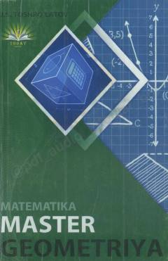

MMGeometriya fanidan abituriyentlar uchun mo'ljallangan testlar to'plami.
Ushbu qo'llanma maktab o'quvchilari va abituriyentlar uchun geometriya fanidan testlar to'plamini o'z ichiga oladi. Kitob Davlat test markazi (DTM) dasturi asosida tuzilgan bo'lib, soddadan murakkabga o'tuvchi 1063 ta variantni qamrab oladi.